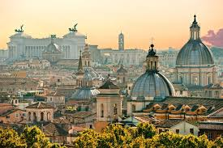

Few countries receive as many accolades for their beauty as Italy, which has taken the top spot in this year's poll of the most beautiful countries in the world. From the rolling vineyards of Tuscany to the sparkling Amalfi coast and the dolomite mountains of Trentino, this relatively small place has a host of different landscapes. Roman ruins scatter the country, meaning you'll feel connected to Italy's storied heritage everywhere you turn. Cities like Rome, Florence and Venice - some of the most beautiful cities in the world - throb with romance, while rooftop villages will connect you with long-held traditions.
Of course, there's also the incredible Italian food, from bright, fresh vegetables on market stalls to the green-gold of cold-pressed olive oil. Several of you noted that Italy has the world's highest number of Unesco Heritage Sites. Others commented on the "lovely towns and cities as well as scenic rural areas" plus some "beautiful beaches". Put everything together and you've got one very special country.
See here our round up of the most beautiful places in Italy, get to know the country more intimately with some astonishing facts about Italy.
Our favourite activity in Italy: Discover Pompeii with an Archaeologist
Planning a trip to Italy? We can help! Try our new tailor-made trips service and enjoy a fully personalised itinerary designed just for you. If you prefer to plan and book by yourself, check out our suggested travel itineraries for inspiration, and find out the best time to travel and where to travel on a budget, how to get around once you are there, as well as the best things to see and do.

Delicately perched on the cliff face, equidistant from Amalfi and Positano and just a short drive from the effortless romance of Ravello, Praiano is my go-to whenever I visit this sun-drenched stretch of coastline. Not just for the saunters down to secluded coves or the glasses of prosecco at beachside bars in Vivaro and Fioriere, but for a stay at Casa Angelina where the crisp decor and serene views always leave you floating on cloud nine.
Not only is San Cassiano the epitome of alpine charm (think wooden-clad chalets with castle-like turrets), but it’s also home to a rich Ladin culture and a consequently authentic South Tyrolean experience. Soak it all in from a rustic-luxe loft suite at Rosa Alpina.
Serving up some of the country’s best gelato (an accolade that isn’t given out freely), an afternoon in San Gimignano is always one well spent. The hilltop town provides a relaxed antidote to the bustle of Siena and with its enchanting views across the cypress-topped hillsides, it feels a million miles from city life.